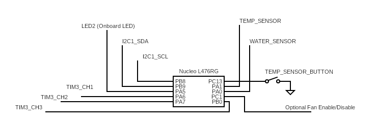

This project monitors environmental conditions in a greenhouses and/or hydroponic systems, providing real-time data and alerts environmental monitoring.
This project monitors temperature and humidity levels with a DHT11 sensor. The STM32 microcontroller reads this data and processes it for real-time monitoring and displays it on an LCD screen. Water level is measured using an analog water level/soil moisture sensor which is then also processed and displayed. The on-board button is used to change which sensor data is currently displayed on the LCD screen. Future plans include adding capability to enable external devices such as fans as well as other sensors.
